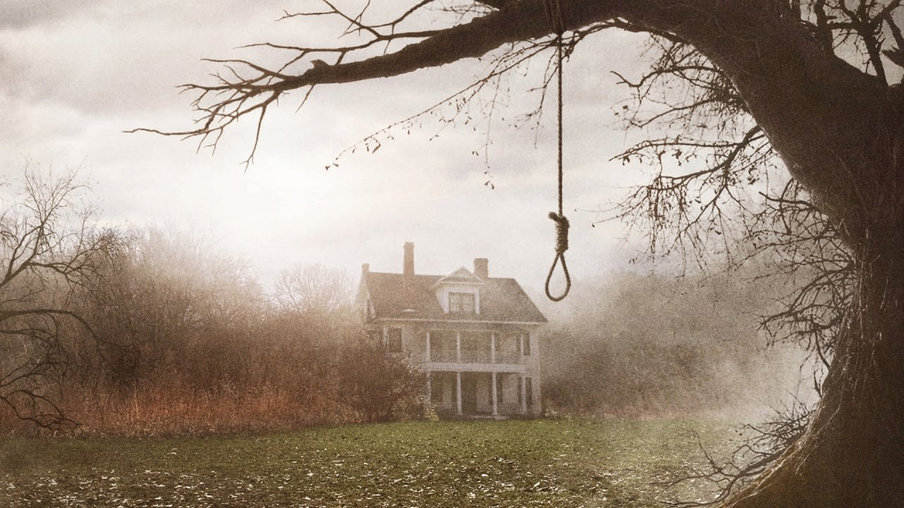

Stranger Things
Miért ez az egyik kedvencem?
Igaz, hogy ez egy sorozat, de nekem ez az egyik kedvencem.
- Mert fent tartja az érdeklődésem
- Nagyon jó zenéket írtak
- Több szálon fut a cselekmény
- Izgalmas sci-fi elemek és az éppen elegendő horror-faktor
Démonok között
És miért ez a kedvenc filmem?
- A film igaz történeten alapul
- Nagyon jó feszültségkeltő zenéket írtak
- Szeretem a misztikus, természet feletti témákat
- Az egyik kedvenc színészpárosom játszik a filmben Vera Farmiga és Patrick Wilson